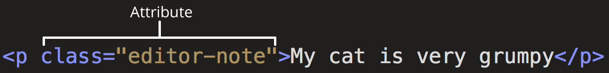

1. Wat is het verschil tussen het internet en het world wide web?
HTML:
HTML (Hypertext Markup Language) is not a programming language. It is a markup language (opmaaktaal) that tells web browsers how to structure the web pages you visit. It is meant for the world wide web for creating web pages and web applications. Documents in HTML can be opened and read by a webbrowser and be displayed as a webpage.
Daarnaast is HTML een opmaaktaal zoals vele andere, met notaties voor het aangeven van een indeling in alinea's, van kopjes, nadruk in de tekst en tabellen.
World wide web:
Het wereldwijde web (www), ook wel met de Engelse term "world wide web" aangeduid, maar meestal kortweg het web, houdt in:
• een aantal technische afspraken voor het wereldwijd over het internet aanbieden en verbinden van allerhande documenten en computertoepassingen;
• de verzameling documenten en toepassingen die wereldwijd volgens dit systeem over het internet worden aangeboden.
Het verschil:
Met HTML kan je webpagina’s creëren die op het wereldwijd systeem (www)
aangeboden wordt over het internet.
2. Wat is het verschil tussen HTML, CSS en JavaScript?
HTML - Hypertext Markup Language (structuring the web):
HTML — the fundamental technology used to define the structure of a webpage. HTML is used to specify whether your web content should be recognized as a paragraph, list, heading, link, image, multimedia player, form, or one of many other available elements or even a new element that you define. HTML is the foundation.
CSS - Cascading Stylesheets (styling the web):
CSS is used to style it and lay it out. CSS defines the look and layout of content. example, you can use CSS to alter the font, color, size, and spacing of your content, split it into multiple columns, or add animations and other decorative features.
Javascript (Dynamic client-side scripting):
JavaScript is the Programming Language for the Web. JavaScript can update and change both HTML and CSS. JavaScript is a programming language that allows you to implement complex things on web pages. Every time a web page does more than just sit there and display static information for you to look at—displaying timely content updates, interactive maps, animated 2D/3D graphics, scrolling video jukeboxes, or more—you can bet that JavaScript is probably involved.
3. Wat is een HTML tag en een HTML element? Hoe open je een HTML tag en hoe sluit je een HTML tag. Maak hiervoor voorbeelden en leg uit.
• The opening tag: This consists of the name of the element (in this example, p for paragraph), wrapped in opening and closing angle brackets. This opening tag marks where the element begins or starts to take effect. In this example, it precedes the start of the paragraph text. • The content: This is the content of the element. In this example, it is the paragraph text. • The closing tag: This is the same as the opening tag, except that it includes a forward slash before the element name. This marks where the element ends. Failing to include a closing tag is a common beginner error that can produce peculiar results.
The element is the opening tag, followed by content, followed by the closing tag.
4. HTML gebruikt basis tags om structuur op te bouwen. De < html >, < head > en < body >. Geef voor elke element aan waarvoor het dient.
1. < html >: The < html > element. This element wraps all the content on the page. It is sometimes known as the root element.
2. < head >: The < head > element. This element acts as a container for everything you want to include on the HTML page, that isn't the content the page will show to viewers. This includes keywords and a page description that would appear in search results, CSS to style content, character set declarations, and more.
3. < body >: The < body > element. This contains all the content that displays on the page, including text, images, videos, games, playable audio tracks, or whatever else.
5. Op HTML elementen kun je attributen gebruiken. Wat zijn HTML attributen ? Geef minimaal 5 attributen en maak voorbeelden waar je de attributen in toepast.
Elements can also have attributes. Attributes look like this:

Attributes contain extra information about the element that won't appear in the content. In this example, 1. the class attribute is an identifying name used to target the element with style information. (for example above)
An attribute should have:
• A space between it and the element name. (For an element with more than one attribute, the attributes should be separated by spaces too.)
• The attribute name, followed by an equal sign.
• An attribute value, wrapped with opening and closing quote marks.
2. href: This attribute's value specifies the web address for the link. For example: href="https://www.mozilla.org/".
3. title: The title attribute specifies extra information about the link, such as a description of the page that is being linked to. For example, title="The Mozilla homepage". This appears as a tooltip when a cursor hovers over the element.
4. target: The target attribute specifies the browsing context used to display the link. For example, target="_blank" will display the link in a new tab. If you want to display the linked content in the current tab, just omit this attribute.
5. video: Specifies an image to be shown while the video is downloading, or until the user hits the play button. For example:
< video controls poster="/images/w3html5.gif">
< source src="movie.mp4" type="video/mp4">
< source src="movie.ogg" type="video/ogg">
Your browser does not support the video tag.
< /video>
6. Waarom is een goede HTML Structuur belangrijk? Is deze code een goede structuur? Leg uit.
Een goede HTML structuur is belangrijk omdat het de basis neerzet voor de webpagina. Zonder een goede structuur raak je het overzicht kwijt. Ook kunnen andere programmeurs het overzicht goed zien. Daarnaast heeft de code een goede structuur omdat het goed opgebouwd is uit alle elementen die een volledige HTML pagina vormen. De volgorde is een standaard/juiste volgorde die gebruikt wordt.
7. Wat is het verschil tussen inline en block elementen?
Inline elements are those which only occupy the space bounded by the tags defining the element, instead of breaking the flow of the content.
Inline element:
Code:
< div>The following span is an < class="highlight">inline element< /span>;
its background has been colored to display both the beginning and end of
the inline element's influence.< /div>
In this example, the < div> block-level element contains some text. Within that text is a < span> element, which is an inline element. Because the < span> element is inline, the paragraph correctly renders as a single, unbroken text flow, like this:
Output:
The following span is an inline element; its background has been colored to display both the beginning and end of the inline element's influence.
Block element:
Now let's change that < span> into a block-level element, such as < p>:
Code:
< div>The following paragraph is a < p class="highlight">block-level element;< /p>
its background has been colored to display both the beginning and end of
the block-level element's influence.< /div>
Output:
The following paragraph is a block-level element; its background has been colored to display both the beginning and end of the block-level element's influence.
The < p> element totally changes the layout of the text, splitting it into three segments: the text before the < p>, then the < p>'s text, and finally the text following the < p>.
8. Wat betekent nesting? Codeer een voorbeeld met nesting erin.
U kunt elementen in andere elementen steken - we noemen dit nesten. Als we willen zeggen dat onze kat HEEL chagrijnig is, kunnen we het woord "heel" in een < strong>-element insluiten. Dat zorgt ervoor dat het woord wordt beklemtoond:
Mijn kat is heel chagrijnig.
9. Sinds de komst van HTML5 zijn er elementen die betekenissen hebben. Wat wordt er bedoeld met HTML semantics?
According to Dictionary.com, semantics refers to the correct interpretation of the meaning of a word or sentence.
To use a word semantically is to use it in a way that is properly aligned with the meaning of the word. When we misuse a word we are not using it semantically.
Many HTML tags have semantic meaning. That is, the element itself conveys some information about the type of content contained between the opening and closing tags.
For example, when a browser encounters an h1 heading it interprets that tag to mean that the contents of the h1 element constitute the most important heading of the section that contains the element.
The semantic meaning of an h1 tag is that it is used to identify the most important header of a specific web page or section.
Waarom is het gebruik van semantics belangrijk?
When writing semantic markup, we use HTML tags to tell browsers something about the contents of the element. In semantic markup, tags are no longer just a way to get content to show up on a web page in a human-readable format.
The tags themselves become a way to tell a machine (whether a browser, a computer, a smartphone, or another smart device) something about the meaning of the content.
Good CSS can make bad markup invisible to the average website visitor. However, no amount of styling will make bad markup more meaningful to a computerized visitor such as a search engine web crawler, browser translation tools, or assistive technologies such as screen readers.
According to Bruce Lawson, the semantic use of HTML elements “enhances accessibility, searchability, internationalization, and interoperability.” In other words, writing semantic markup is mandatory if you want your website to be accessible to all visitors, to achieve a high search engine ranking, to be available to visitors from around the world, and to interface effectively with other web services.
Writing semantic markup is about creating web content that is both human and computer readable. When the web can be read equally well by both humans and computers, it becomes more accessible since computers are better able to analyze its contents, index it, deliver it, and developers are better able to tie different sources of information together into new web services.
10. Wat voor content zou je in de volgende elementen gebruiken?
Geef in je antwoord voor elk element een toelichting.
● < header> A container to be used for a web page header which typically contains the site logo, heading elements, and site navigation.
Ik zou het menu als content gebruiken omdat dat het eerste is waar men naar zoekt.
● < footer> A container to be used for a web page footer which typically contains authorship, contact, and copyright information in addition to navigational links and a link back to the top of the web page.
Ik zou contact informatie gebruiken omdat dat het laatste is waar men naar zoekt.
● < main> A high-level element used to contain all of the content that is unique to a single web page and not repeated across multiple web pages.
Ik zou hier de geschiedenis van het bedrijf plaatsen omdat dat uniek en eenmalig is voor de website.
● < nav> An element to contain blocks of site navigation links. This element is typically placed in the page header and footer, and may also be used in an aside (sidebar) element as well.
Ik zou hier de verschillende menu titels plaatsen omdat je met dit element kan navigeren.
● < section> The section element is used to mark off sections of a document, such as chapters or major sections of a long form post.
Ik zou hier de verschillende hoofdstukken van het content van de website plaatsen omdat het je met deze element secties kan begrenzen.
● < aside> Use to identify content that is related to the main content on the page but not part of the primary flow of the document. For example, the aside element may contain a glossary definition of a term that appears in a blog post or it may contain advertisements related to the contents of the page.
Ik zou hier gerelateerde reclames plaatsen over het content van de website.
● < article> The article element is used to identify a block of content suitable for reuse and syndication in other settings, such as a blog post or technical article.
Ik zou hier technische artikel plaatsen over het content omdat het herbruikbaar is.
Headers
11. Onderzoek en leg uit waarom headers zowel belangrijk zijn voor zoekmachines als voor de gebruikers.
Headers Make Pages Scannable
Most people rarely read articles in their entirety online. They scan them. The only time they read every word of an article is when they are highly interested in the topic.
Headers make it easier for people to scan the page for information. They often start with the first header. If it interests them, they will move on to a subheading. The subheading usually gives them one piece of the information they were looking for, and then the next subheading gives them another piece of information. If they want details, they will read what is in between those subheadings.
Using headers that accurately reflect what is in your article will help to make sure people actually read your content.
Headers Help Your SEO
Headers are an important part of on-page SEO. Search engines, such as Google, love headers for the same reason people do — headers make reading content easy and quick. When a search engine bot can crawl a website page by going from one heading to the next, it can grasp the gist of the information. This way it knows which online searches to rank your pages in.
When creating your headers, think about the keywords you want your page to rank for. If you can’t naturally use these keywords in your headers, then it’s possible that you need to rethink the copy on the rest of your page. Your headers should provide a general overview of the content on your page or in your blog post, and you want that content to be relevant to the searches you’d like to rank for in Google.
Usability for Mobile Devices
As we move forward into the world of voice search, headers are becoming even more important. When someone uses a mobile device to search online, Google will scan website pages paying particular attention to headers. If the headers match what the person is searching for, it will deliver the content.
This means that if your page doesn’t have any headers, there’s a good chance the device will not pick up that it is relevant to the search. This leads to lost opportunities for improving your SEO.
12. Onderzoek hoe je een text-header aanmaakt en reproduceer het volgende resultaat:
Headings opdrachten
Heading 1
Heading 2
Heading 3
Heading 4
Heading 5
Heading 6
Paragrafen
13. Onderzoek wat een paragraaf tag is en hoe hij gebruikt wordt. Geef hier een voorbeeld bij.
Het < p>-element van HTML vertegenwoordigt een paragraaf van tekst. Paragrafen worden meestal vertegenwoordigd in visuele media als blokken tekst, die worden gescheiden van aangrenzende blokken door verticale witruimte en/of inspringing op de eerste regel.
Voorbeeld:
Dit is de eerste paragraaf met tekst. Dit is de eerste paragraaf met tekst.
Dit is de eerste paragraaf met tekst. Dit is de eerste paragraaf met tekst.
Dit is de tweede paragraaf met tekst. Dit is de tweede paragraaf met tekst.
Dit is de tweede paragraaf met tekst. Dit is de tweede paragraaf met tekst.
14. Onderzoek en leg het verschil tussen het stoppen van alle tekst in één paragraaf tag, en het opsplitsen van de tekst in meerdere tags uit.
Het verschil is dat je met gebruik van meerdere tags de tekst kan opsplitsen en als je alle tekst in een paragraaf tag doet krijg je een blok tekst zonder dat het opgesplitst is.
15. Reproduceer het volgende resultaat door gebruik te maken van text-headers en de paragraaf tags.
Mijn eerste website
Mijn eerste sub-kop
The tiger (Panthera tigris) is the largest extant cat species and a member of the genus Panthera. It is most recognisable for its dark vertical stripes on orange-brown fur with a lighter underside. It is an apex predator, primarily preying on ungulates such as deer and wild boar. It is territorial and generally a solitary but social predator, requiring large contiguous areas of habitat, which support its requirements for prey and rearing of its offspring. Tiger cubs stay with their mother for about two years, before they become independent and leave their mother's home range to establish their own. The tiger once ranged widely from the Eastern Anatolia Region in the west to the Amur River basin, and in the south from the foothills of the Himalayas to Bali in the Sunda islands. Since the early 20th century, tiger populations have lost at least 93% of their t
Mijn tweede sub-kop
The tiger (Panthera tigris) is the largest extant cat species and a member of the genus Panthera. It is most recognisable for its dark vertical stripes on orange-brown fur with a lighter underside. It is an apex predator, primarily preying on ungulates such as deer and wild boar. It is territorial and generally a solitary but social predator, requiring large contiguous areas of habitat, which support its requirements for prey and rearing of its offspring. Tiger cubs stay with their mother for about two years, before they become independent and leave their mother's home range to establish their own. The tiger once ranged widely from the Eastern Anatolia Region in the west to the Amur River basin, and in the south from the foothills of the Himalayas to Bali in the Sunda islands. Since the early 20th century, tiger populations have lost at least 93% of their
The tiger (Panthera tigris) is the largest extant cat species and a member of the genus Panthera. It is most recognisable for its dark vertical stripes on orange-brown fur with a lighter underside. It is an apex predator, primarily preying on ungulates such as deer and wild boar. It is territorial and generally a solitary but social predator, requiring large contiguous areas of habitat, which support its requirements for prey and rearing of its offspring. Tiger cubs stay with their mother for about two years, before they become independent and leave their mother's home range to establish their own. The tiger once ranged widely from the Eastern Anatolia Region in the west to the Amur River basin, and in the south from the foothills of the Himalayas to Bali in the Sunda islands. Since the early 20th century, tiger populations have lost at least 93% of their
16. Voeg een Horizontal rule toe en reproduceer het volgende resultaat.
Mijn eerste website
Mijn eerste sub-kop
Tekst
Mijn tweede sub-kop
Tekst
Tekst
Footer
Deze website is gebouwd vanuit de Techgrounds Academy.
17. Voeg een link tag toe en reproduceer het volgende resultaat in de footer.
18. Onderzoek welke 4 attributen een link tag kan hebben, leg uit wat deze doen en voeg deze als voorbeeld toe op je website.
To link an external stylesheet, you'd include a < link> element inside your < head> like this:
Example:
< link href="main.css" rel=“stylesheet">
This simple example provides the path to the stylesheet inside an href attribute, and a rel attribute with a value of stylesheet. The rel stands for "relationship", and is probably one of the key features of the < link> element — the value denotes how the item being linked to is related to the containing document.
2. En 3. A rel value of preload indicates that the browser should preload this resource (see Preloading content with rel="preload" for more details), with the as attribute indicating the specific class of content being fetched. The crossorigin attribute indicates whether the resource should be fetched with a CORS request.
Example:
< link rel="preload" href="myFont.woff2" as="font"
type="font/woff2" crossorigin=“anonymous”>
4. You can also provide a media type or query inside a media attribute; this resource will then only be loaded if the media condition is true.
Example:
< link href="print.css" rel="stylesheet" media="print">
< link href="mobile.css" rel="stylesheet" media="screen and (max-width: 600px)">
Onderdeel 2 - HTML Elementen
Opdrachten
Image, audio & video
1. Bij het inladen van een bestand is het noodzakelijk om de locatie van het bestand aan te geven. Dit kan op 2 manieren:
● Absolute path
● Relative path
Wat houden deze 2 paths in?
An absolute path refers to the complete details needed to locate a file or folder, starting from the root element and ending with the other subdirectories. Absolute paths are used in websites and operating systems for locating files and folders.
An absolute path is also known as an absolute pathname or full path.
There are two types of paths: absolute and relative paths. An absolute path always contains the root elements and the complete list of directories to locate the specific file or folder. All the information required to locate the file or folder is available in the absolute path. This is different from a relative path, which is often combined with other paths to access the file. When it comes to websites, the absolute paths always contain the domain name of the website. However, in the case of a relative path, it only points to a relative link.
It is for these reasons that relative paths are used when linking within pages or files within a site, whereas absolute paths can be used anywhere and are needed when linking to an external file/folder on a different website. In the case of operating systems, the absolute path can be determined by right-clicking on the file/folder and then selecting the “properties” option.
2. Zoek uit welke formaat afbeeldingen er nog meer kan zijn.
Abbreviation
APNG
GIF
ICO
JPEG
PNG
SVG
3. Zoek uit welke browsers er zijn en maak een lijst van je antwoord.
Amaya
AMosaic
AppliArt Browser
Arachne
Arora
Avant Browser
AWeb
Blazer
Brave
Camino
Cello
CoolNovo
Classilla
CometBird
Comodo Dragon
CrazyBrowser
Deepnet Explorer
Dillo
Emacs-w3m
Epic
Flock
Fresco
Galeon
Google Chrome
HotJava
IBrowse
iCab
Internet Explorer
IceCat
Iceweasel
K-Meleon
Kazehakase
KKman
Konqueror
Links
Links2
Lunascape
Lynx
Maxthon
Microsoft Edge
Midori
Mosaic
Mozilla Firefox
Mozilla Suite
MSN Explorer
Netscape Navigator
NetSurf
Nintendo DS Browser
Off By One
OmniWeb
Opera
Oregano
Origyn Web Browser
Pale Moon
PSP Browser
rekonq
RockMelt
Safari
SeaMonkey
Shiira
SkyFire
Sleipnir
SlimBrowser
SlipKnot
Sputnik
SRWare Iron
SunriseBrowser
Swift
TheWorld Browser
UC
Vivaldi
Voyager
w3m
Web
WebExplorer
WebsterXL
Wii Browser
Wyzo
XBrowser
4. Onderzoek hoe het plaatsen van een foto gedaan wordt en plaats deze boven en onderaan je website door zowel gebruik te maken van de absolute path en relative path.
An absolute file path is the full URL to a file:
Example:
A relative file path points to a file relative to the current page.
In the following example, the file path points to a file in the images folder located at the root of the current web:
Example:
5. Wat houdt de alt attribute in? En waarom is het handig om de alt attribute gebruiken?
The required alt attribute specifies an alternate text for an image, if the image cannot be displayed.
The alt attribute provides alternative information for an image if a user for some reason cannot view it (because of slow connection, an error in the src attribute, or if the user uses a screen reader).
6. Laadt dit bestand in als een audio op het scherm.
7. Speel een audio bestand af met < source> tag. Leg uit wat hier het voordeel van is.
The < source> tag is used to specify multiple media resources for media elements, such as < video>, < audio>, and < picture>.
The < source> tag allows you to specify alternative video/audio/image files which the browser may choose from, based on browser support or viewport width. The advantage is that the browser will choose the first < source> it supports.
8. Zoek een willekeurig video en sla dit op in je computer. Laadt dit bestand in als een video op het scherm.
Lijsten
9. Maak gebruik van de verschillende soorten lijsten om het volgende resultaat op je webpagina weer te geven.
item 1
item 2
item 3
item1
item2
1. sub-item1
2. sub-item2
item 3
item 1
item 2
item 3
item 1
item 2
sub item 1
sub item 2
item 3
item 1
item 2
sub item 1
sub item 2
item 3
10. Bouw een navigatiebalk door gebruik te maken uit een lijst dat bestaat uit de volgende onderdelen:
11. Creëer nu voor elk onderdeel een header en een bijbehorende stuk tekst en zorg ervoor dat door te klikken op de links in de navigatiebalk je gerefereerd wordt naar het bijbehorende onderdeel.
Tigers
The tiger (Panthera tigris) is the largest extant cat species and a member of the genus Panthera. It is most recognisable for its dark vertical stripes on orange-brown fur with a lighter underside. It is an apex predator, primarily preying on ungulates such as deer and wild boar. It is territorial and generally a solitary but social predator, requiring large contiguous areas of habitat, which support its requirements for prey and rearing of its offspring. Tiger cubs stay with their mother for about two years, before they become independent and leave their mother's home range to establish their own.
The tiger once ranged widely from the Eastern Anatolia Region in the west to the Amur River basin, and in the south from the foothills of the Himalayas to Bali in the Sunda islands. Since the early 20th century, tiger populations have lost at least 93% of their historic range and have been extirpated in Western and Central Asia, from the islands of Java and Bali, and in large areas of Southeast and South Asia and China. Today's tiger range is fragmented, stretching from Siberian temperate forests to subtropical and tropical forests on the Indian subcontinent and Sumatra.
The tiger is listed as endangered on the IUCN Red List. As of 2015, the global wild tiger population was estimated to number between 3,062 and 3,948 mature individuals, with most of the populations living in small pockets isolated from each other. India currently hosts the largest tiger population. Major reasons for population decline are habitat destruction, habitat fragmentation and poaching. Tigers are also victims of human–wildlife conflict in particular in range countries with a high human population density.
The tiger is among the most recognisable and popular of the world's charismatic megafauna. It featured prominently in ancient mythology and folklore and continues to be depicted in modern films and literature, appearing on many flags, coats of arms and as mascots for sporting teams. The tiger is the national animal of India, Bangladesh, Malaysia and South Korea.
Lions
The lion (Panthera leo) is a species in the family Felidae and a member of the genus Panthera. It is most recognisable for its muscular, deep-chested body, short, rounded head, round ears, and a hairy tuft at the end of its tail. It is sexually dimorphic; adult male lions have a prominent mane. With a typical head-to-body length of 184–208 cm (72–82 in) they are larger than females at 160–184 cm (63–72 in). It is a social species, forming groups called prides. A lion pride consists of a few adult males, related females and cubs. Groups of female lions usually hunt together, preying mostly on large ungulates. The lion is an apex and keystone predator; although some lions scavenge when opportunities occur and have been known to hunt humans, the species typically does not.
Typically, the lion inhabits grasslands and savannas, but is absent in dense forests. It is usually more diurnal than other big cats, but when persecuted it adapts to being active at night and at twilight. In the Pleistocene, the lion ranged throughout Eurasia, Africa and North America, but today it has been reduced to fragmented populations in sub-Saharan Africa and one critically endangered population in western India. It has been listed as Vulnerable on the IUCN Red List since 1996 because populations in African countries have declined by about 43% since the early 1990s. Lion populations are untenable outside designated protected areas. Although the cause of the decline is not fully understood, habitat loss and conflicts with humans are the greatest causes for concern.
One of the most widely recognised animal symbols in human culture, the lion has been extensively depicted in sculptures and paintings, on national flags, and in contemporary films and literature. Lions have been kept in menageries since the time of the Roman Empire and have been a key species sought for exhibition in zoological gardens across the world since the late 18th century. Cultural depictions of lions were prominent in the Upper Paleolithic period; carvings and paintings from the Lascaux and Chauvet Caves in France have been dated to 17,000 years ago, and depictions have occurred in virtually all ancient and medieval cultures that coincided with the lion's former and current ranges.
Monkeys
Monkey is a common name that may refer to groups or species of mammals, in part, the simians of infraorder Simiiformes. The term is applied descriptively to groups of primates, such as families of New World monkeys and Old World monkeys. Many monkey species are tree-dwelling (arboreal), although there are species that live primarily on the ground, such as baboons. Most species are also active during the day (diurnal). Monkeys are generally considered to be intelligent, especially the Old World monkeys of Catarrhini.
Simians and tarsiers emerged within haplorrhines some 60 million years ago. New World monkeys and catarrhine monkeys emerged within the simians some 35 million years ago. Old World monkeys and Hominoidea emerged within the catarrhine monkeys some 25 million years ago. Extinct basal simians such as Aegyptopithecus or Parapithecus [35-32 million years ago], eosimiidea and sometimes even the Catarrhini group are also considered monkeys by primatologists.[3][4][5][6][7][8][9]
Lemurs, lorises, and galagos are not monkeys; instead they are strepsirrhine primates. Like monkeys, tarsiers are haplorhine primates; however, they are also not monkeys.
Apes emerged within "monkeys" as sister of the Cercopithecidae in the Catarrhini, so cladistically they are monkeys as well. There has been resistance to directly designate apes (and thus humans) as monkeys, so "Old World monkey" may be taken to mean the Cercopithecoidea or the Catarrhini.[10][11][12][13][14][15][9][16][17] That apes are monkeys was already realized by Georges-Louis Leclerc, Comte de Buffon in the 18th century.[18][19]
Monkeys, including apes, can be distinguished from other primates by having only two pectoral nipples, a pendulous penis, and a lack of sensory whiskers
Hippopotaumus
The hippopotamus (/ˌhɪpəˈpɒtəməs/ HIP-ə-POT-ə-məs;[3] Hippopotamus amphibius), also called the hippo, common hippopotamus or river hippopotamus, is a large, mostly herbivorous, semiaquatic mammal and ungulate native to sub-Saharan Africa. It is one of only two extant species in the family Hippopotamidae, the other being the pygmy hippopotamus (Choeropsis liberiensis or Hexaprotodon liberiensis). The name comes from the ancient Greek for "river horse" (ἱπποπόταμος). After the elephant and rhinoceros, both of which are found in Africa, the hippopotamus is the third-largest type of land mammal and the heaviest extant artiodactyl. Despite their physical resemblance to pigs and other terrestrial even-toed ungulates, the closest living relatives of the Hippopotamidae are cetaceans (whales, dolphins, porpoises, etc.) from which they diverged about 55 million years ago.
Hippos are recognisable by their barrel-shaped torsos, wide-opening mouths revealing large canine tusks, nearly hairless bodies, columnar legs and large size; adults average 1,500 kg (3,310 lb) for males and 1,300 kg (2,870 lb) for females. Despite its stocky shape and short legs, it is capable of running 30 km/h (19 mph) over short distances.
Hippos inhabit rivers, lakes, and mangrove swamps, where territorial males preside over a stretch of river and groups of five to thirty females and young hippos. During the day, they remain cool by staying in the water or mud; reproduction and childbirth both occur in water. They emerge at dusk to graze on grasses. While hippos rest near each other in the water, grazing is a solitary activity and hippos are not territorial on land. The hippo is among the most dangerous animals in the world due to its highly aggressive and unpredictable nature. They are threatened by habitat loss and poaching for their meat and ivory canine teeth.
Onderdeel 3 - Forms & Tabellen
Opdrachten
HTML Forms
1. Maak een HTML form waarbij de gebruiker zijn naam en achternaam in kan vullen.
2. Naast input text fields zijn er ook nog andere input fields. Zoals:
3. Maak een input email field met een submit knop.
tip: wat gebeurt er wanneer je op de submit knop clickt met een random text?
Dan zegt die: voer een email adres in.
4. Een formulier kun je ook groeperen. Zie hieronder voor een voorbeeld:
Persoonsgegevens
5. Naast input element heb je ook een select element. Hiermee kan je een dropdown list maken. Maak een drop down list.
6. We hebben nu geleerd hoe je dropdown list, radiobuttons en checkboxes maak. Dit zijn 3 verschillende manieren om de gebruiker een keuze te laten maken. Benoem voor dropdown list, radio buttons en checkboxes een situatie waar je in kan gebruiken en leg dat uit?
Dropdown list: laat meerdere keuzes in een handige overzicht zien, waarbij je direct kunt zoeken naar de juiste keuze. Dit zou ik doen wanneer je al weet wat je gaat kiezen en het slechts een kwestie is van zoeken en selecteren. Handig voor lange lijsten.
Radio buttons: laat je de kiezers maar 1 keuze hanteren. Dus dit zou ik gebruiken wanneer we zoeken naar de juiste keuze.
Checkboxes: laat je de kiezers meerdere keuzes aanvinken. Dus dit zou ik gebruiken wanneer er de mogelijkheid is om meerdere keuzes als resultaat te zien.
7. Maak een reserveringsformulier om een sport te reserveren. In dit formulier willen we graag het volgende weten:
● Naam van dat persoon
● Off hij/zij lidmaatschap heeft
● E-mail van dat persoon
● Type sport om te reserveren. Keuze uit: tafeltennis, badminton of squash
● Datum en tijdstip om te reserveren
● Een checkbox waarbij de gebruiker akkoord gaat over de reserverings
voorwaardes
● Een submit knop
Reserveringsformulier sport
8. Maak een reserveringsformulier om een boek te reserveren. In dit formulier willen we graag het volgende weten:
● Naam van dat persoon
● Telefoonnummer
● E-mail van dat persoon
● Naam van dat boek
● Aantal boeken om te reserveren. Het aantal moet minimaal 1 en maximaal 5 zijn.
● Een submit knop
Reserveringsformulier boek
10. Om een tabel te maken heb je volgende elementen nodig: Geef voor elke element een definitie.
● < table>: definieert een HTML tabel.
● < thead>: The < thead> tag is used to group header content in an HTML table.
The < thead> element is used in conjunction with the < tbody> and < tfoot> elements to specify each part of a table (header, body, footer).
● < tbody>: The < tbody> tag is used to group the body content in an HTML table.
● < tfoot>: The < tfoot> tag is used to group footer content in an HTML table.
● < th>: defines a header cell in an HTML table
● < tr>: defines a row in an HTML table.
● < td>: defines a standard data cell in an HTML table
11. Maak een tabel met table element.
Voornaam
Achternaam
Leeftijd
Telefoonnr
John
Doe
41
+31 12345678
Steven
Smith
32
+31 12345678
Alexander
Beave
16
+31 12345678
12. Maak een agenda tabel met table element.
MA
DI
WO
DO
VR
Afspraak met tandarts
Sporten
Huiswerk maken
Werken
Werken
Afspraak met tandarts
Werken
Bij vrienden
13. Voor het maken van een tabel kan je ook gebruik maken van colspan en rowspan attributen. Zoek uit wat colspan en rowspan attribuut doet en meet het volgende:
Sport
Aantal recreanten
Aantal competitie spelers
Totale deelnemers
Badminton
10
30
40
Racket sport Tafeltennis
59
30
89
Tennis
159
130
189
Tennis 159 130
189
Voetbal
88
40
128
Ballsport Basketbal
60
40
100
Volleybal
35
20
55
14. Maak nu zelf een tabel met de elementen die je hiervoor hebt geleerd.